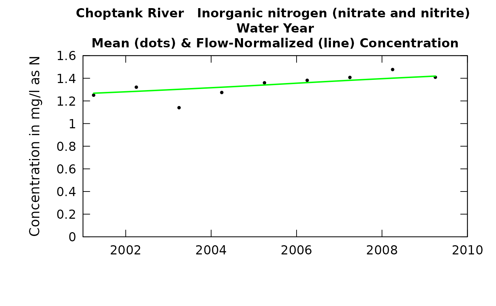

R/plotConcHist.R
plotConcHist.RdData come from named list (eList), which contains a Daily dataframe with the daily flow data, and an INFO dataframe with metadata.
The annual concentrations are "time-weighted" mean concentrations (as opposed to "flow-weighted").
The annual results reported are for a specified "period of analysis" which can be
an entire water year, a calendar, a season or even an individual month.
User specifies this period of analysis in the call to setupYears.
User can specify plotting of three possible series. All are in units of mg/L. Annual mean concentration WRTDS_K version of annual mean concentration (requires that WRTDSKalman has been run) Flow normalized mean concentration
Although there are a lot of optional arguments to this function, most are set to a logical default.
plotConcHist(eList, yearStart = NA, yearEnd = NA, concMax = NA, printTitle = TRUE, tinyPlot = FALSE, usgsStyle = FALSE, plotFlowNorm = TRUE, plotAnnual = TRUE, plotGenConc = FALSE, cex = 0.8, cex.axis = 1.1, cex.main = 1.1, lwd = 2, col = "black", col.pred = "green", col.gen = "red", customPar = FALSE, ...)
| eList | named list with at least the Daily and INFO dataframes |
|---|---|
| yearStart | numeric is the calendar year containing the first estimated annual value to be plotted, default is NA (which allows it to be set automatically by the data) |
| yearEnd | numeric is the calendar year just after the last estimated annual value to be plotted, default is NA (which allows it to be set automatically by the data) |
| concMax | numeric. Maximum value of concentration to be plotted. |
| printTitle | logical variable if TRUE title is printed, if FALSE title is not printed (this is best for a multi-plot figure) |
| tinyPlot | logical variable, if TRUE plot is designed to be plotted small, as a part of a multipart figure, default is FALSE |
| usgsStyle | logical option to use USGS style guidelines. Setting this option to TRUE does NOT guarantee USGS compliance. It will only change automatically generated labels |
| plotFlowNorm | logical variable if TRUE flow normalized line is plotted, if FALSE not plotted |
| plotAnnual | logical variable if |
| plotGenConc | logical variable. If |
| cex | numerical value giving the amount by which plotting symbols should be magnified |
| cex.axis | magnification to be used for axis annotation relative to the current setting of cex |
| cex.main | magnification to be used for main titles relative to the current setting of cex |
| lwd | number magnification of line width. |
| col | color of points on plot, see ?par 'Color Specification' |
| col.pred | color of flow normalized line on plot, see ?par 'Color Specification' |
| col.gen | color of points for WRTDS_K output on plot, see ?par 'Color Specification' |
| customPar | logical defaults to FALSE. If TRUE, par() should be set by user before calling this function (for example, adjusting margins with par(mar=c(5,5,5,5))). If customPar FALSE, EGRET chooses the best margins depending on tinyPlot. |
| ... | arbitrary graphical parameters that will be passed to genericEGRETDotPlot function (see ?par for options) |
yearStart <- 2001 yearEnd <- 2010 eList <- Choptank_eList plotConcHist(eList, yearStart, yearEnd)